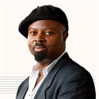

‘We need a new philosophy for these times, for this near-terminal moment in the history of the human.’ Firefighters tackle a wildfire near Avila, central Spain, 16 August 2021. Photograph: César Manso/AFP/Getty Images
Fri 12 Nov 2021 10.00 GMT Last modified on Sat 13 Nov 2021 05.20 GMT
Artists must confront the climate crisis – we must write as if these are the last days

The response to our most urgent threat requires new forms of creativity and human imagination
Faced with the state of the world and the depth of denial, faced with the data that keeps falling on us, faced with the sense that we are on a ship heading towards an abyss while the party on board gets louder and louder, I have found it necessary to develop an attitude and a mode of writing that I refer to as existential creativity. This is the creativity at the end of time.
It is not given to many people to sense the end of time approaching. Maybe some Atlanteans sensed it. Maybe the sages of Pompeii, if there were any, felt it in advance. Maybe those ancient civilisations whose societies were about to be wrecked by invaders from the sea felt it. But I can’t think of any who had the data that it was coming, who had the facts pouring at them every day, and yet who carried on as if everything were normal.
Albert Camus, writing during the second world war, felt the need for a new philosophy to answer the extreme truths of the times. The absurd was born from that. Existentialism was born too from a world in the throes of extreme crisis. But here we are on the edges of the biggest crisis that has ever faced us. We need a new philosophy for these times, for this near-terminal moment in the history of the human.
It is out of this I want to propose an existential creativity. How do I define it? It is the creativity wherein nothing should be wasted. As a writer, it means everything I write should be directed to the immediate end of drawing attention to the dire position we are in as a species. It means that the writing must have no frills. It should speak only truth. In it, the truth must be also beauty. It calls for the highest economy. It means that everything I do must have a singular purpose.
It also means that I must write now as if these are the last things I will write, that any of us will write. If you knew you were at the last days of the human story, what would you write? How would you write? What would your aesthetics be? Would you use more words than necessary? What form would poetry truly take? And what would happen to humour? Would we be able to laugh, with the sense of the last days on us?
Sometimes I think we must be able to imagine the end of things, so that we can imagine how we will come through that which we imagine. Of the things that trouble me most, the human inability to imagine its end ranks very high. It means that there is something in the human makeup resistant to terminal contemplation. How else can one explain the refusal of ordinary, good-hearted citizens to face the realities of climate change? If we don’t face them, we won’t change them. And if we don’t change them, we will not put things in motion that would prevent them. And so our refusal to face them will make happen the very thing we don’t want to happen.
We have to find a new art and a new psychology to penetrate the apathy and the denial that are preventing us making the changes that are inevitable if our world is to survive. We need a new art to waken people both to the enormity of what is looming and the fact that we can still do something about it.
The ability to imagine what we dread most is an evolutionary tool that nature has given us to transcend what we fear. I do not believe that imagining the worst makes it happen. Imagining the worst might be one of the factors that makes us prevent it from happening. That is the function of dystopias and utopias: one to make real to us a destination we must not follow, the other to imagine for us a future that is possible. Fear of poverty has made many people rich. Fear of death has kept many people healthy and sensible in how they live.
There is a time for hope and there is a time for realism. But what is needed now is beyond hope and realism. This is a time when we ought to dedicate ourselves to bringing about the greatest shift in human consciousness and in the way we live. We ought to consecrate ourselves to bringing about a conscious evolutionary leap forward. No longer can we be the human beings we have been: wasteful, thoughtless, selfish, destructive. It is now time for us to be the most creative we have ever been, the most far-sighted, the most practical, the most conscious and selfless. The stakes have never been, and will never be, higher.
What is called for here is a special kind of love for the world, the love of those who discover the sublime value of life because they are about to lose it. For we are on the verge of losing this most precious and beautiful of worlds, a miracle in all the universe, a home for the evolution of souls, a little paradise here in the richness of space, where we are meant to live and grow and be happy, but which we are day by day turning into a barren stone in space.
So a new existentialism is called for. Not the existentialism of Camus and Jean-Paul Sartre, negative and stoical in spirit, but a brave and visionary existentialism, where as artists we dedicate our lives to nothing short of re-dreaming society. We have to be strong dreamers. We have to ask unthinkable questions. We have to go right to the roots of what makes us such a devouring species, overly competitive, conquest-driven, hierarchical.
We ought to ask questions about money, power, hunger. The scientists tell us that fundamentally there is enough for everyone. This Earth can sustain us. We can’t just ask the shallow questions any more. Our whys ought to go to the core of what we are. Then we ought to set about changing us. We ought to remake ourselves. Somehow civilisation has taken a wrong turn and we collectively need to alter our destination, our journey. We can’t drive ourselves to the brink of extinction a second time. If we survive this brink, if we pull ourselves back from this apocalypse that’s awaiting, then we have to find a global direction that is one of sustenance and justice and beauty for the whole Earth, and for all the peoples of the Earth.
This is the best and most natural home we are ever going to have. And we need to become a new people to deserve it. We are going to have to be new artists to redream it. This is why I propose existential creativity, to serve the unavoidable truth of our times, and a visionary existentialism, to serve the future that we must bring about from the brink of our environmental catastrophe.
We can only make a future from the depth of the truth we face now.
- Ben Okri is a novelist and poet. He’s the author of Every Leaf a Hallelujah and The Famished Road
SOURCE: THE GUARDIAN